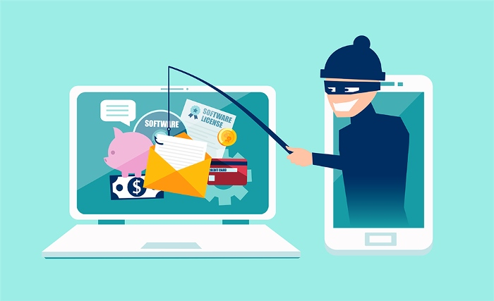
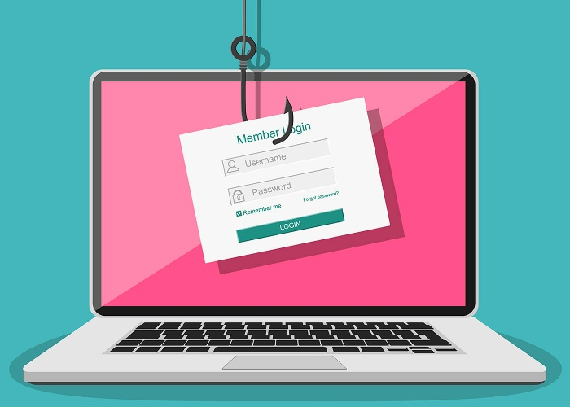

Most people know that phishing attacks are on the rise, but not everyone is sure how to protect themselves against them. Unfortunately, online phishing attacks are getting more and more sophisticated, as they include links to malicious websites, malware, and ransomware. The good news is that there are simple things you can do to protect yourself and your business from these attacks.
In a nutshell, phishing is a form of online identity theft in which cybercriminals attempt to get their targets to reveal sensitive data, including usernames and passwords.Phishing in one form or another has been present for quite some time via phone scams and postal mail.
Cybercriminals appear to have found that many phishing attacks are successful (and easy) ways to get into an enterprise and launch more targeted attacks. Today, Humans are becoming seen as the weakest link and therefore the best target for burglars considering infiltration of an organization or SME.
Follow the recommendations below to help you avoid phishing attacks by staying better protected.

You can significantly lower your chances of becoming victimized by phishing attacks by being cautious and smart when surfing the web and checking your emails. For example, as detailed in ESET's Bruce P. Burrell article, all information you might receive when you are being instructed to go somewhere or do something should be verified before you interact by preferably verifying your name, email address, and despite what is being said, the source as well as the message's content.
You should be very cautious about clicking on links in email for sites you are not absolutely sure about, even if you think that it is a trustworthy site. If you have an uncertainty, open a new browser tab and input the URL's address there. Be careful when opening emails from suspicious sources requesting private and banking information. Legitimate companies, including especially your bank, will never request sensitive information via email.
Pay attention to shortened links on social media, particularly on Bitly and similar services. Cybercriminals often use them to assist you in thinking that you are clicking on a legit link, when in fact you are casually directed to a false site.
You should always place your cursor over a link in a message to assess whether you were sent to the right site that is, the one you view when you cursor over the link
Cybercriminals' use of these make-believe websites makes it easier for them to access your private information by direct download or similarly infesting your gadget with malware.
Dozens of suspicious emails are considerably evident. They'll be riddled with typos, words in caps, and exclamation points. They will also have an impersonal salutation, such as Dear Customer or Dear Sir Madam .
Cybercriminals will frequently make errors in these emails (even intentionally) to bypass filters, improve responses, and cull out the recipients who will be aware of the scam.
In some situations, a reputable firm may call on you to do something quickly. For example, in 2014, eBay asked its customers to change their passwords promptly after its data breach.
Most often, threats and urgency are the result of what is intended to be a legitimately threatening email.
Some of these threats may include warnings associated with a fine, or advising you to do something to avoid your account from being closed. Ignore the scare tactics and contact the company generally by way of a trusted and known method.

Whenever possible, only use a secure website (indicated by https and a security lock symbol in the browser window's address bar) to browse, and especially when submitting sensitive information online, such as credit card information. Avoid using public, unsecured Wi-Fi networks for banking and shopping or entering personal information online. When in doubt, use your mobile data connection through your smartphone's 3G or LTE option.
As a small aside, corporations such as Google are looking to improve security by labeling sites that do not provide appropriate safeguarding.
In summary, phishing attacks also happen via email (or text messages), so just in case, be sure to check your emails and text for suspicious links. Also, never open any attachments or links from suspicious emails. This is the simplest way to protect from email phishing attacks.